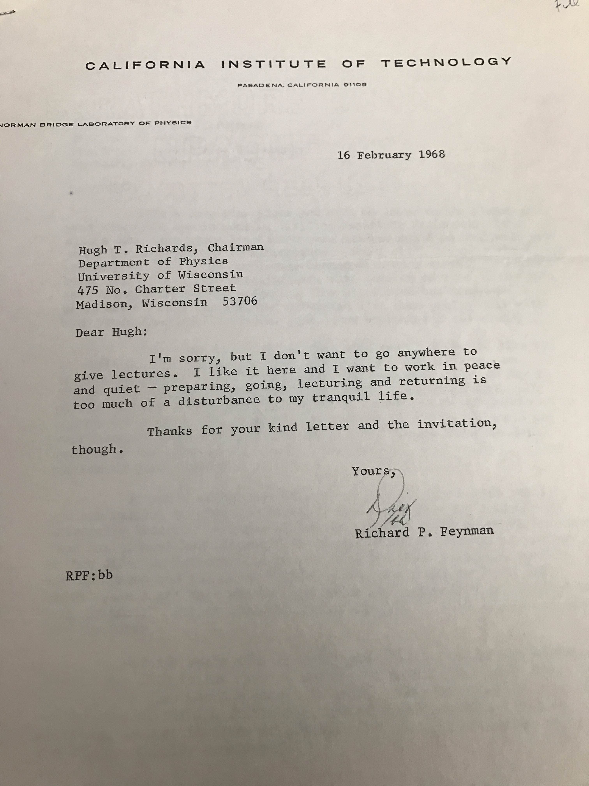
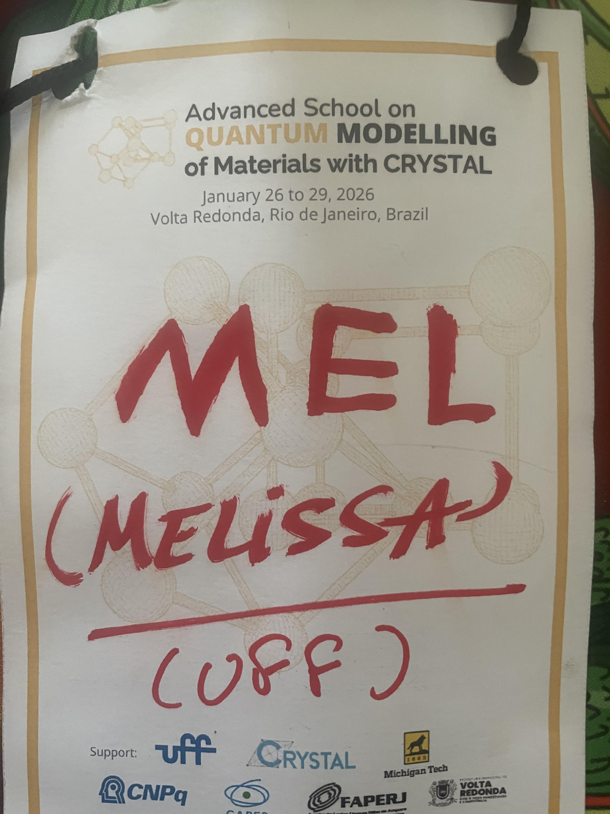
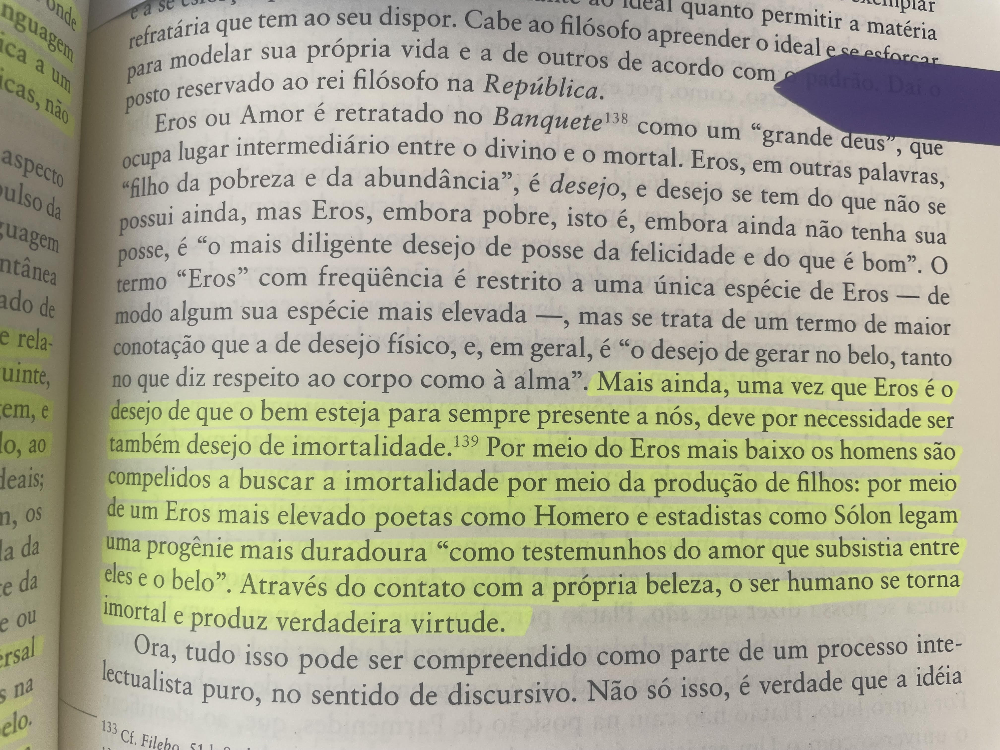
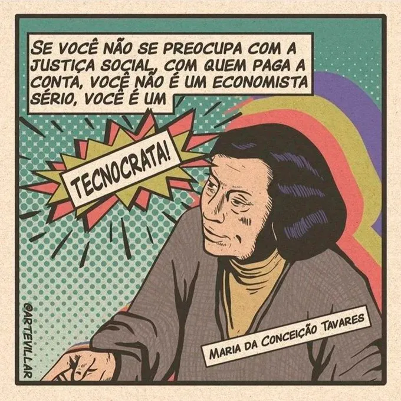

Diário não diário - 2026
Quero registrar alguns eventos que acontecem comigo esse ano. Nada muito especial, apenas banalidades que acho interessante.📆 30/01/2026
Fiz um almoço para os meus amigos hoje. Também comprei alguns livros para o Kindle e um curso para a Ju.
Comecei a ler a Teogonia para a Mel. Não é a melhor escolha. Decidi que amanhã lerei Histórias Verdadeiras do Luciano de Samósata para ela.
📆 29/01/2026
Terminei os cronjobs para o script do arxiv. Deu um pouco de trabalho, mas depois percebi que era problema nos paths relativos que estava usando.
📆 28/01/2026
Fico um pouco incomodado com a neutralidade política no ambiente científico -- na física em particular. Uma especie de alienação voluntária, como se estivéssemos separados de tudo o que está acontecendo ao nosso redor. Um exemplo tenebroso disso é o Planet Musings completamente inabalável, poucos comentários políticos. Verdade seja dita, o John Baez fala sobre política em outros canais. Acho que o Peter Woit tem feito um trabalho incrível se posicionando. é único que faz uma crítica mais vocal e corajosa da Imperolândia.
Fui andar de skate hoje... isso me faz bem 🛹.
📆 27/01/2026

O David Schmidtt enviou esse mensagem acima.

Guardando o primeiro crachá da Mel
Hoje levei a Mel para brincar na UFF com os
recreadores. Manhã muito divertida.
Também ajustei um
pouco esse site. Joguei fora alguns arquivos tex que não
serviam para nada.
📆 26/01/2026

Li partes do o volume 01 do livro do
Copleston sobre Platão e a teoria das formas. O livro tem
alguns momentos um tanto quanto apologético, pelo menos
ele é honesto em reconhecer isso. Em geral é bastante
interessante. Não recomendo a compra desse livro (bom
livro, editora detestável).
Organizei o website.
📆 25/01/2026

''A Economia que não se preocupa com a justiça
social é uma economia que condena os povos, o que está acontecendo no
mundo inteiro, a uma brutal concentração de renda, ao desemprego e a
miséria. Isto, para mim, não é Economia, isto é coisa de tecnocrata
alucinado, que acha que está tudo certo, e não está tudo certo. Eu sou
da Esquerda tradicional, eu sempre me preocupei com a justiça
social. Uma Economia que diz que primeiro é preciso estabilizar,
depois crescer, depois distribuir é uma falácia e tem sido uma
falácia, pois nem estabiliza, cresce aos solavancos e não
distribui. Esta é a História da Economia Brasileira desde o
pós-guerra. Se você não se preocupa com a justiça social, com quem paga a
conta, você não é um economista sério, você é um tecnocrata.''
(Maria da Conceição Tavares)
Ontem terminei de ler o Levítivo. Achei o texto bastante chato e cínico. É incrível como o texto é obviamente uma retroprojeção pós-exílica dos sacerdotes para a construção de uma mitologia. Achei bastante interessante algumas partes que privilegiam os sacerdotes, mesmo quando envolvem leis que todos deveriam seguir.
Também li um pouco do Anti-Duhring. Em particular, as seções Henri de Saint-Simon, Charles Fourier e Robert Owen. Fascinante o que Owen fez.
📆 24/01/2026

Terminei de preparar a parte de variáveis complexas do curso de Física Matemática I. Divertido, mas muito longo: ainda tenho que preparar os outros 70%.